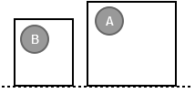
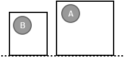

A have the “Top†snapping, so every object have the “Top†snapping can snap to the top of A. B is the same. So they snap each other at their top position.
8. Object Snapping
All Pencil user know Pencil have already provided the default snapping between objects. It is very useful for aligning. There are 6 default snapping in Pencil:
Top-to-Top
Bottom-to-Bottom
Center-to-Center
Left-to-Left
Right-to-Right
Midle-to-Midle

A have the “Top†snapping, so every object
have the “Top†snapping can snap to the top of
A. B is the same. So they snap each other at their top position.
Sometimes the snapping is wanted to customize for specific purpose. This tutorial will show how to create new snappings. These definitions are also put into <Action></Action> and must have id “getSnappingGuideâ€.
<Shape id="RoundedRect" displayName="Rectangle" icon="Icons/rectangle.png">
<Properties>
...
</Properties>
<Behaviors>
...
</Behaviors>
<Actions>
<Action id="getSnappingGuide">
<Impl>
<![CDATA[
var b = this.getBounding();
return [
new SnappingData("FrameTop", b.y + b.height/2, "TabBottom", false, this.id),
new SnappingData("Top", b.y + b.height, "Top", false, this.id),
new SnappingData("Bottom", b.y, "Bottom", false, this.id),
new SnappingData("Left", b.x + b.width, "Left", true, this.id),
new SnappingData("Right", b.x, "Right", true, this.id)
]
]]>
</Impl>
</Action>
</Actions>
<p:Content xmlns:p="http://www.evolus.vn/Namespace/Pencil" xmlns="http://www.w3.org/2000/svg">
<rect id="rrRect" x="0" y="0" />
</p:Content>
</Shape>
The general snapping formula:
new SnappingData(SnappingName, position, ToSnappingName, isHorizontalSnapping, this.id)
isHorizontalSnapping: if true, the snapping will be through Horizontal direction.
SnappingName: is the Snapping name of this object contains this snapping definition.
ToSnappingName: is the Snapping name of other object that can be snapped to this object.
Position: is this object's position snapping (vertical or horizontal).
Before modifying, the rectangle have already 6 snappings:
new SnappingData("Top", b.y, "Top", false, this.id),
new SnappingData("Bottom", b.y + b.height, "Bottom", false, this.id),
new SnappingData("HCenter", b.y + b.height / 2, "HCenter", false, this.id),
new SnappingData("Left", b.x, "Left", true, this.id),
new SnappingData("Right", b.x + b.width, "Right", true, this.id),
new SnappingData("VCenter", b.x + 192, "VCenter", true, this.id),
b is the object bounding, b.y is the object's top position, b.x is the object's left position, b.height is the object bound height, b.width is the object bound with.
In this sampe, 4 default snappings are modified and a new snapping is created.

With new SnappingData("Top", b.y + b.height, "Top",
false, this.id), the A's Top snapping is overridden. So
other object have Top snapping.The Bottom, Left, Right snappings
are the same.

A: new SnappingData("FrameTop", b.y + b.height/2, "TabBottom", false, this.id)
B: new SnappingData("TabBottom", b.y, "FrameTop", false, this.id)
A have a new snapping “TabBottomâ€. Assume that B have a new snapping “TabBottomâ€. In this case, only B can snap to A at the defined position.
If other objects want to snap to A at FrameTop, defining a snapping have “TabBottom†name like B.
To force all object can default snap to A FrameTop, editting the A ToSnappingName to default name: new SnappingData("FrameTop", b.y + b.height/2, "Top", false, this.id)
Can use “Bottomâ€, “Hcenter†instead of “Topâ€